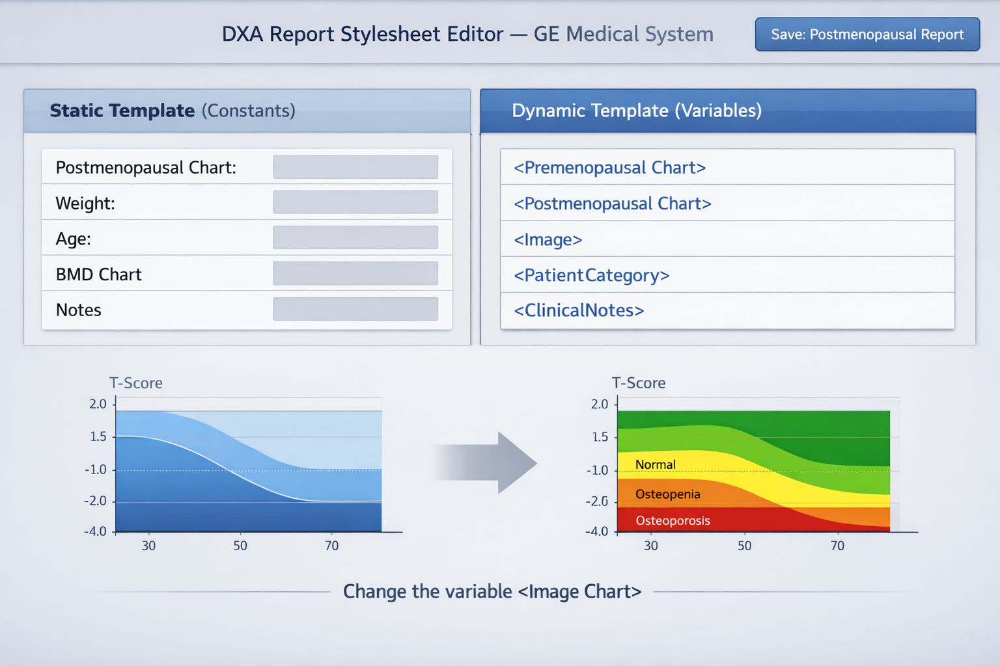
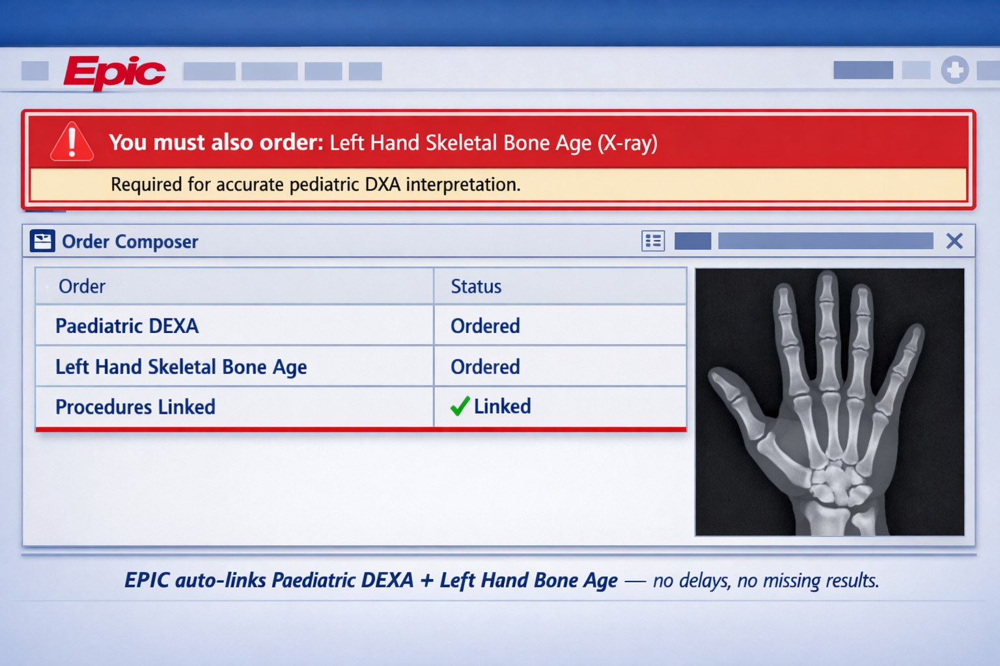

The Stylesheet Transformation
I bypassed manufacturer-locked templates by re-engineering the Internal Stylesheets . By aligning system variables with WHO Classifications , I enabled specialized reporting for:
As shown in image, we change the variable
<image chart>
from blue Z-score chart to WHO classification chart.

Pediatric Data Workaround
Standard software uses chronological age, leading to diagnostic errors. My innovation uses Skeletal Age Injection —hacking the birthdate field with biological maturity data.
Pediatricians now receive a Dual Z-score Report . By comparing chronological vs. skeletal results, they can accurately track "drops" and growth deviations.

EHR Digital Transformation
To scale this protocol, I migrated workflows to an automated EPIC Clinical Decision Support engine, linking the Left Hand Bone Age X-ray directly to Pediatric DXA orders.
Before Automation
Manual memory-based ordering; high risk of missing skeletal age data, leading to delayed reports.
After Automation
Hard-coded Linked Procedures; system-enforced compliance and reporting efficiency.
PEDIATRIC PATIENT DETECTED:
Skeletal Age Hand X-ray is REQUIRED for this order.


STRATEGIC IMPACT
| Impact Point | Achievement |
|---|---|
| Reduce Reporting Time | Automated workflows cut reporting delays by eliminating manual template adjustments. |
| Accurate Pediatric Results | Achieved 100% Z-score accuracy for growth-impaired pediatric cases. |
| Reduce Manual Entry | Minimized risk of data transcription errors through direct system logic injection. |
| Enhance Physician Accuracy | Provided radiologists and pediatricians with reliable, biology-anchored diagnostic data. |